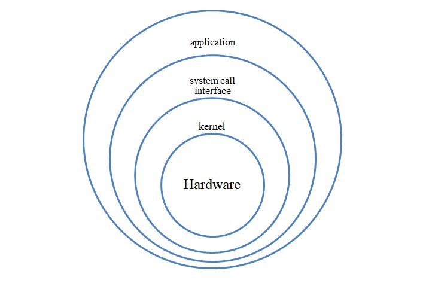

kernal
## Kernel
The kernel is the central component of an operating system that provides low-level services to enable software to interact with hardware. It acts as an interface between the computer hardware and the application software, managing system resources such as memory, CPU time, and I/O operations.
### Kernel Architecture
The architecture of a kernel can vary depending on the specific operating system, but most kernels are designed using a monolithic or microkernel architecture.
#### Monolithic Kernel
A monolithic kernel is a type of kernel that includes all the essential operating system functions and services in a single executable binary. This means that the kernel provides all the essential services and device drivers that enable the operating system to interact with hardware devices. In a monolithic kernel, all system calls and device drivers are located in a single executable, which makes it faster and more efficient than other kernel architectures.
Monolithic kernels have the following characteristics:
- They are typically faster and more efficient than other kernel architectures because all system calls and device drivers are located in a single executable.
- They have a larger kernel memory footprint because all the kernel functions and drivers are loaded into memory at boot time.
- They are more tightly coupled than other kernel architectures because all the kernel functions and drivers are part of a single binary.
Linux is an example of an operating system that uses a monolithic kernel architecture.
#### Microkernel
A microkernel, on the other hand, is a type of kernel that provides only the essential services required to communicate between hardware and software. It offloads non-essential services and device drivers to user space processes, which communicate with the kernel through standardized interfaces. Microkernels are typically more flexible and modular than monolithic kernels, which makes them easier to maintain and extend.
Microkernels have the following characteristics:
- They are more flexible and modular than monolithic kernels because they offload non-essential services and device drivers to user space processes.
- They have a smaller kernel memory footprint because only essential services are included in the kernel.
- They are less tightly coupled than monolithic kernels because non-essential services and device drivers are in user space.
Some examples of operating systems that use a microkernel architecture are QNX and MINIX.
### Kernel Functions
The kernel performs several essential functions that enable the operating system to interact with hardware devices and provide services to applications. Some of the key functions of the kernel include:
#### Memory Management
The kernel is responsible for managing the system's memory resources. It allocates memory to running processes, ensuring that each process has access to the memory it requires and preventing processes from interfering with each other. The kernel also manages virtual memory, which enables processes to use more memory than is physically available by swapping data to and from disk.
#### Process Management
The kernel is responsible for managing the lifecycle of processes on the system. It creates, schedules, and terminates processes, determines which processes are allocated CPU time, and manages process priorities to ensure that the system is responsive and efficient. The kernel also provides interprocess communication mechanisms that enable processes to communicate with each other.
#### Device Management
The kernel is responsible for managing hardware devices on the system. It detects, initializes, and configures devices, and provides device drivers that enable applications to interact with hardware devices through standardized interfaces.
#### File System Management
The kernel is responsible for managing the file system on the system. It provides a file system interface that enables applications to access and modify files on the system. The kernel is responsible for file I/O operations and directory management.
#### Network Management
The kernel is responsible for managing network devices and communication on the system. It provides network device drivers and protocols that enable applications to communicate with other systems and devices.
### Conclusion
In summary, the kernel is a fundamental component of an operating system that provides low-level services to enable software to interact with hardware. It manages system resources such as memory, CPU time, and I/O operations, and acts as an interface between the computer hardware and the application software. The architecture of the kernel can vary depending on the specific operating system, but most kernels are designed using a monolithic or microkernel architecture. The kernel performs several essential functions, including memory management, process management, device management, file system management, and network management
{kind=link}